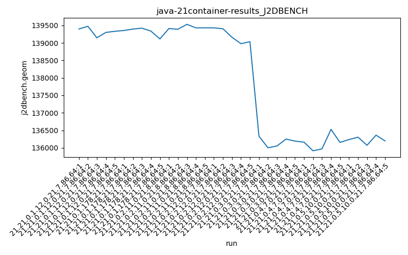
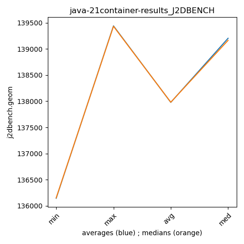

java-21 J2DBENCH
Context at bottom
/home/jvanek/git/benchmarks-in-nested-virtualisation-toolchain/final_results/container_results/container-results_J2DBENCH
java-21
J2DBENCH
container-results_J2DBENCH
final score
Expected number of java-21 JDKs: 7
1st avgmed_alljdks_metric:
/home/jvanek/git/benchmarks-in-nested-virtualisation-toolchain/final_results/result_processing.py /home/jvanek/git/benchmarks-in-nested-virtualisation-toolchain/final_results/container_results/container-results_J2DBENCH j2dbench.geom False
values: [139398, 139477, 139148, 139301, 139333, 139356, 139397, 139423, 139339, 139115, 139412, 139391, 139532, 139431, 139432, 139432, 139405, 139163, 138978, 139036, 136331, 136001, 136052, 136250, 136192, 136161, 135915, 135969, 136527, 136154, 136236, 136304, 136073, 136362, 136197]

Expected number of iterations: 5
final number of values: 35 out of 35
Pass rate: 100.0%
values: (135915, 139532, 137977.8, 139115)

** accuracy from all jdks and runs
more is better
MIN: 135915
MAX: 139532
AVG: 137977.8
MED: 139115
Relative differences 1:
MIN-MAX: 3.0 %
MIN-AVG: 1.0 %
MIN-MED: 2.0 %
MAX-MIN: -3.0 %
MAX-AVG: -1.0 %
MAX-MED: -0.0 %
AVG-MED: 1.0 %
stored to java-21.properties. sort | uniq that!
2nd avgmed_by_jdk_metric:
values: [139331.4, 139326.0, 139439.6, 139202.8, 136165.2, 136145.2, 136234.4]

values: [139333, 139356, 139431, 139163, 136192, 136154, 136236]

values: (136145.2, 139439.6, 137977.8, 139202.8)
values: (136154, 139431, 137980.7142857143, 139163)

** accuracy from all jdks where runs were avged
more is better
MIN: 136145.2
MAX: 139439.6
AVG: 137977.8
MED: 139202.8
Relative differences 1:
MIN-MAX: 2.0 %
MIN-AVG: 1.0 %
MIN-MED: 2.0 %
MAX-MIN: -2.0 %
MAX-AVG: -1.0 %
MAX-MED: -0.0 %
AVG-MED: 1.0 %
stored to java-21.properties. sort | uniq that!
** accuracy from all jdks where runs were medianed
more is better
MIN: 136154
MAX: 139431
AVG: 137980.7142857143
MED: 139163
Relative differences 1:
MIN-MAX: 2.0 %
MIN-AVG: 1.0 %
MIN-MED: 2.0 %
MAX-MIN: -2.0 %
MAX-AVG: -1.0 %
MAX-MED: -0.0 %
AVG-MED: 1.0 %
stored to java-21.properties. sort | uniq that!
/home/jvanek/git/benchmarks-in-nested-virtualisation-toolchain/final_results/container_results/container-results_RADARGUNs3
java-21
J2DBENCH
/home/jvanek/git/benchmarks-in-nested-virtualisation-toolchain/final_results/container_results/container-results_RADARGUNs1
java-21
J2DBENCH
/home/jvanek/git/benchmarks-in-nested-virtualisation-toolchain/final_results/container_results/container-results_DACAPO
java-21
J2DBENCH
/home/jvanek/git/benchmarks-in-nested-virtualisation-toolchain/final_results/container_results/container-results_SPECJBB
java-21
J2DBENCH
/home/jvanek/git/benchmarks-in-nested-virtualisation-toolchain/final_results/container_results/container-results_JMH
java-21
J2DBENCH
pass rates:
container-results_J2DBENCH=100.0%
Context:
- container_results
- J2DBENCH